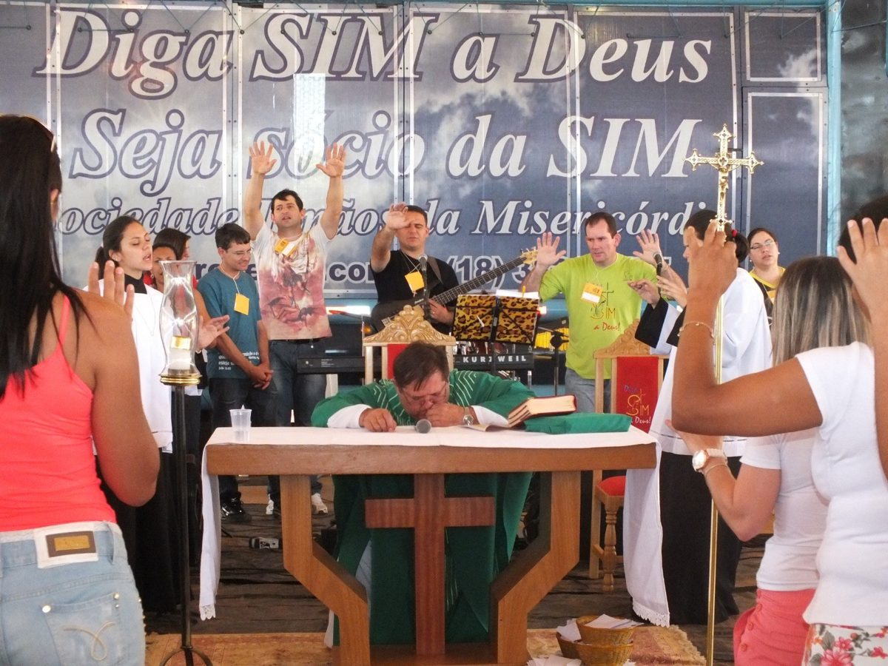
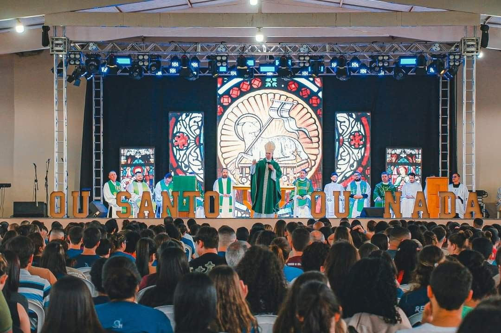

TodasComunidadeRetirosFormação30 anosTestemunhos

Comunidade · Destaque
Festa da Misericórdia reúne famílias em oração diante de Jesus Misericordioso
Padres, servos e famílias celebraram o carisma da comunidade com Santa Missa, adoração e a bênção das imagens.

Retiros
OSON 2026: mais de 2 mil pessoas no maior retiro da comunidade
Três dias de louvor, pregação e encontro com Jesus.

30 anos
Era dezembro de 1996: a história de um SIM
Como uma oração deu origem à comunidade.

Formação
Novas turmas do Diga SIM a Deus no próximo ano
Inscrições serão abertas em breve em várias cidades.

Testemunhos
“Entrei de um jeito e saí de outro”
Participantes contam o que viveram no Seminário de Vida.

Espiritualidade
Por que rezar o Terço da Misericórdia às 15h?
Entenda a Hora da Misericórdia e como rezar.

Eventos
Evangelizashow: louvor, oração e muita música em 21/11
Uma noite para toda a família no Centro de Evangelização.
123›